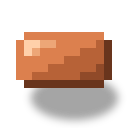
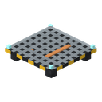
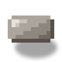

Гніздо дрона
alaindustrial:drone_nest
Зведення
Гніздо дрона — ґратчастий майданчик на ніжках для будівельного дрона з електромагнітом. Саме по собі гніздо порожнє: дрон — окремий предмет, його вставляють у гніздо. Гніздо ставиться будь-де над ратушею, у межах її сліду; жовті килими майданчика дронів — лише підказка. Дрон бере з черги замовлень селища одну будівлю — ратушу чи будинок — і відновлює її: спершу розчищення, потім дорога до мережі селища (у будинку), потім будівництво — один політ, один блок.
Міні-приклад: у селищі світиться ядро LV, у диспетчерській лежать план ратуші й матеріали. Поставте гніздо на дах ратуші й вставте в нього будівельного дрона (ПКМ дроном). Натисніть «Почати» в диспетчерській — дрон злітає, спершу розчищає ратушу (знімає павутиння, биту цеглу, траву й квіти), потім будує: носить блоки з буфера диспетчерської й кладе їх на місце.
Як це працює
- Своє селище й ратуша. Гніздо знаходить селище, на території якого стоїть, і працює, тільки якщо стоїть над ратушею цього селища: над її слідом (у плані), від підлоги ратуші до 8 блоків вище її даху. Інакше воно каже «Не над ратушею». Килим для цього не потрібен. Літає дрон по всьому селищу: до ратуші, до будинків і до місця нового будинку.
- Дрон. Порожнє гніздо малює одну ґратку, не заряджається й не рахується в ліміті гнізд. ПКМ будівельним дроном вставляє його; ПКМ порожньою рукою в присіді виймає дрона предметом, заряд лишається на предметі. Дрона в польоті вийняти не можна. Зламане гніздо кидає свого дрона із зарядом.
- Скільки гнізд працює. Кількість працюючих гнізд задає тир ядра: LV — 1, MV — 2, HV — 3, атомне — 4. Відновлена ратуша добудовує майданчик на даху: ще +1 гніздо. Зайві гнізда стоять і кажуть «Зайве гніздо: тир ядра більше не дозволяє». Працюють ті, що почали працювати раніше. Рахуються тільки гнізда з дроном над ратушею.
- Одна будівля — один дрон. Вільний дрон бере перше замовлення в черзі диспетчерської, яким не зайнятий інший дрон, і тримає його роботу — розчищення, дорогу чи будівництво, — поки не закінчить. Інший дрон за цю будівлю не візьметься. Будівництво будинку починається, тільки коли закінчено його розчищення й дорогу.
- Політ. Дрон ніколи не летить крізь блоки: перед вильотом він прокладає шлях повітрям — над дахом, уздовж стін, у двері, — і сідає на клітинку згори, а якщо згори закрито — поруч. Летить плавно: розганяється, на поворотах закладає крен, перед посадкою гальмує. На місці він перевіряє клітинку заново — світ за час польоту міг змінитися. Назад летить тим самим шляхом і підзаряджається в гнізді.
- Двері, люки й хвіртки. Двері й люки, які відчиняються рукою, і будь-які хвіртки на шляху дрон відчиняє, як гравець (зі звуком), — за півтора блока до прорізу — і зачиняє за собою, якщо відчиняв він. Якщо гравець зачинив двері, поки дрон усередині, дрон відчиняє їх зсередини на зворотному шляху. Відчинений проріз лишається відчиненим. Залізні двері й люки він не чіпає: облітає їх, або клітинка чекає шляху.
- Тимчасовий прохід. Якщо до клітинки шляху немає (її замурували стіни руїни), дрон не зупиняється, а сам прокладає собі прохід: знаходить, які блоки — не більше двох — можна на час зняти, знімає їх по одному за політ, ставить блок клітинки й повертає кожен знятий блок на місце, останній першим. Знімає він лише блоки самої будівлі, що стоять як слід, землю, камінь, сміття й рослини; ніколи — блок із даними, незламний блок, рідину, блок із водою, двоклітинковий блок, блок над люком лабораторії, блок, на якому лежить пісок чи гравій, і блок поруч із рідиною. Предмети з буфера на це не витрачаються. Якщо щось пішло не так (робота змінилася, гніздо перестало працювати), усі зняті блоки одразу стають на місце; зайняте місце — блок іде в буфер або падає на землю: дір дрон не лишає. Ставить він і так, щоб не замурувати себе: блок, який закрив би останній вхід до сусідньої клітинки того самого етапу, чекає, поки її поставлять. Якщо шляху немає й так, робота зупиняється з причиною «Дрон не може долетіти до x y z» і сама пробує знову через 5 секунд.
- Немає плану — немає роботи. Ратушу дрон будує лише за планом реставрації в диспетчерській, будинок — лише якщо селище вивчило план його типу. Якщо вийняти план ратуші з диспетчерської або зламати саму диспетчерську, дрони зупиняються: дрон у повітрі долітає до клітинки, нічого не робить, нічого не бере з буфера й повертається в гніздо, а робота стоїть із причиною «Немає плану реставрації». План повернули — робота продовжується сама. Ремонтові будівлі, відновленої раніше, план не потрібен.
- Розчищення. Згори вниз, щоб пісок над уламками зійшов раніше, ніж те, на чому він лежить; пісок чи гравій над знятим блоком падає, як у гравця. Прибирається лише сміття: блоки зі списку уламків, те, що поклала сама руїна там, де в цілій будівлі інший блок, те, що замінюється під час встановлення, рослини й інше сміття (трава, квіти, саджанці, кущі, гриби, очерет, кактуси, ліани, павутиння, латаття, шар снігу, сажа) і рідина там, де в цілій будівлі повітря. Висока рослина йде цілком. Прибране зникає. Розчистивши будівлю, дрон прибирає кільце в три блоки навколо ратуші й навколо будинку від рівня над підлогою й вище: пісок, пісковик, землю, камінь, гравій, сніг, квіти, кактуси, ланцюги, плити, сміття руїни та інші уламки. Стіни стоять вільно. Блоків із даними й чужих будівель у кільці він не чіпає; ядро платить за кожен прибраний блок, як під час розчищення.
- Місце нового будинку. На місці будинку, який відновлювач заклав сам, дрон знімає й природу — землю, камінь, пісок, стовбури, листя, траву, — і все зняте складає в буфер диспетчерської (що не влізло, падає на землю).
- Дорога. Будинку, не підключеному до мережі селища, дрон перед будівництвом кладе дорогу селища до найближчої точки мережі: блоки дороги бере з буфера, зайву землю на трасі зрізає в буфер, ями засипає ґрунтом із буфера, траву й квіти над дорогою прибирає.
- Фундамент. Перед першим блоком будинку дрон засипає яму під його підлогою землею чи каменем із буфера (ґрунт, загрубілий ґрунт, кругляк, глибосланцевий кругляк, камінь, пісковик) — знизу вгору, лише відкриті клітинки, під якими є ґрунт, — тож будинок стоїть на землі і після відновлення руїни, і на новому місці.
- Будівництво. Знизу вгору, шар за шаром, до цілого вигляду будівлі. Блок береться з буфера диспетчерської в момент, коли дрон його ставить. Пісок і гравій у повітря дрон не ставить — чекає, поки поставлять блок під ними. Двоклітинковий блок стає цілком за один раз, як у гравця: двері, ліжко, зарядне ложе, висока рослина; предмет із буфера береться один, як у гравця. Скрині складу ратуші дрон ставить порожніми. Ядро, капсулу, диспетчерську й гнізда дрон не ставить.
- Блок із даними на місці плану. Скриню, машину чи інший блок із даними, а також будь-який блок, що не сміття, там, де за планом інший блок, дрон не чіпає й мовчки не пропускає: робота зупиняється з причиною «Заважає: X в x y z», а відновлювачеві один раз приходить рядок у чат. Прибрали блок — будівництво продовжується саме.
- Істота в клітинці. Якщо в клітинці стоїть гравець чи моб, дрон цю клітинку пропускає й повертається до неї пізніше.
- Незавантажений чанк. Клітинка в чанку, який ніхто не тримає завантаженим, — робота зупиняється з причиною «Чанк не завантажено». Заради будівництва чанки не завантажуються.
- Таблички будинків. Коли в черзі нічого робити, дрон стежить за табличками будинків: підлітає й змінює плити так, щоб табличка показувала номер мешканця — цілу літеру й три цифри (мешканець E-102 — «E102»). Будинок спорожнів — перша літера стає битою: лишається номер останнього мешканця. Будинок, де ще ніхто не жив, зберігає табличку руїни. Це тиха робота: без повідомлень у чат і без замовлення в черзі; ядро платить за кожну плиту, як за блок. Плиту, яку гравець забрав, спершу повертає ремонт будинку, потім дрон її гравіює. Літери — плити «Гравійована плита з літерою».
- Збереження посеред польоту. Дрон — не істота, а стан гнізда: під час виходу зі світу він не губиться й не роздвоюється, а предмет для блока ще лежить у буфері, поки блок не поставлено. Зняті для проходу блоки гніздо теж пам'ятає.
Енергія дрона
- Гніздо заряджає батарею вставленого дрона тільки від ядра поселення — з того, що лежить у ядрі понад запас на його утримання. Ні кабель, ні зарядні блоки дрона не заряджають. Порожнє гніздо нічого не бере.
- Ядро платить за кожен поставлений, прибраний, знятий на час і повернений блок і за кожну плиту таблички.
- Політ оплачує батарея: за кожен блок шляху туди й назад. Перед вильотом у батареї має бути на весь політ і на один блок.
- Ядро згасло — дрон доробляє розпочатий політ на батареї (блок оплачує батарея) і повертається в гніздо; нових польотів немає, робота стоїть із причиною «Немає енергії», поки ядро знову не засвітиться.
- Батарея порожня, а ядро не може її зарядити — дрон стоїть у гнізді, робота стоїть із причиною «Немає енергії».
Стан
ПКМ по гнізду пише над хотбаром, що з ним: «Немає дрона. Вставте будівельного дрона», «Поруч немає селища», «Не над ратушею», «Зайве гніздо: тир ядра більше не дозволяє», «У селищі немає диспетчерської», «У диспетчерській немає плану реставрації: дрони стоять», «Ядро поселення згасло», «Немає енергії», «Чекає роботи», «Працює», «Чекає: див. вкладку «Будівництво» ядра», «До решти клітинок немає шляху повітрям: повтор пізніше» — і заряд дрона у відсотках із тим, чи заряджає його зараз ядро («заряджається від ядра» або «ядро не заряджає»). Робота, що зупинилася, видна з причиною на вкладці «Замовлення» диспетчерської та на картці будівлі в ядрі; гніздо саме пробує знову раз на 5 секунд. Спершу дрон бере те, що чекає в черзі, а потім будь-яку зупинену роботу селища, не лише ту, яку зупинив сам: склали матеріали в диспетчерську — будівництво піде далі саме.
Енергія
| Поле | Значення |
|---|---|
| Роль | від мережі не бере; батарею заряджає ядро поселення |
| Батарея дрона | 4000 EU/FE |
| Заряд від ядра | до 16 EU/FE за такт, поки дрон у гнізді |
| Ціна блока (платить ядро) | 20 EU/FE за поставлений, прибраний, знятий на час чи повернений блок і за плиту таблички; у двоклітинкового блока — за кожну половину |
| Ціна польоту (платить батарея) | 1 EU/FE за кожен блок шляху, туди й назад |
| Швидкість | 2 такти на блок шляху |
Властивості блоку
| Поле | Значення |
|---|---|
| Форма | ґратчаста плита 16×16 на чотирьох ніжках, висота 3 px, мідні контактні смуги й чотири бірюзові вогні до 3,8 px; пристикований дрон — до 12 px. Колізія й клік — плита заввишки 3 px (дрон не заважає ходити). Не повний куб |
| Встановлення | будь-де над слідом ратуші, від її підлоги до 8 блоків над дахом; жовті килими майданчика (у ратуші рівнин 8, пустелі 6) — підказка, де зручно |
| Міцність та інструмент | кайло, міцність 2, вибухостійкість 6. У селищі з відновлювачем ламає тільки відновлювач |
| Дроп | гніздо; вставлений дрон випадає окремим предметом зі своїм зарядом |
Звук
Поки дрон у повітрі, чути тихий зациклений звук гвинтів — той самий, що в дрона-садівника, — і він іде від самого дрона, а не від гнізда. У гнізді дрон мовчить.
Будівельний дрон
Окремий предмет, стос — 1. Його вставляють у порожнє гніздо. Заряд дрона зберігається на предметі (смужка під значком і рядок «Заряд: N%» у підказці); підказка нагадує, що дрон вставляється в гніздо над ратушею й заряджається від ядра селища. Зарядні блоки й енергоранець його не заряджають.
Рецепти
Гніздо (верстак): електронна схема, мідний кабель (контакти), дві мідні пластини й чотири залізні пластини.
| Ряд | Слоти |
|---|---|
| 1 | мідна пластина · електронна схема · мідна пластина |
| 2 | залізна пластина · мідний кабель · залізна пластина |
| 3 | залізна пластина · — · залізна пластина |
Будівельний дрон (верстак): батарея, дві електронні схеми, мідна котушка і чотири мідні пластини.
| Ряд | Слоти |
|---|---|
| 1 | мідна пластина · — · мідна пластина |
| 2 | електронна схема · батарея · електронна схема |
| 3 | мідна пластина · мідна котушка · мідна пластина |
Прогресія
- Потребує ядра поселення, що світиться, і диспетчерської з планом і матеріалами.
- Відновлює ратушу, потім будинки змінників; кладе дорогу селища.
- Далі: дрони наступних тирів (швидші, з вантажем більше одного блока, інші класи будівель) і модулі — окремими завданнями.
Пов'язане
- Диспетчерська — план, черга замовлень і буфер матеріалів.
- Ядро поселення — картки будівель, заряд і оплата блоків.
- Гравіровані плити — з них дрон складає номер на табличці будинку.
- Станція дрона-садівника — родичка за будовою польоту.
Крафт
Крафт на верстаку

▶
Гніздо дрона